2017年北京市中考英语试题 原卷解析
2017年初中毕业升学考试(北京市)英语
听力理解（共30 分）
一、听对话，从下面各题所给的A、B、C 三幅图片中选择与对话内容相符的图片。每段对话你将听
两遍。（共5分，每小题1分）
1.A.
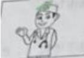
B. 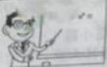
C. 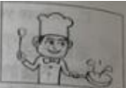
2.A.
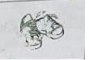
B. 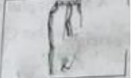
C. 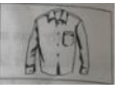
3.A.
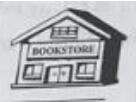
B. 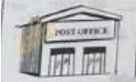
C. 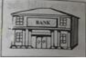
4.A.
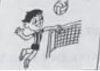
B. 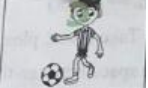
C. 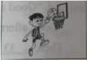
5.A.
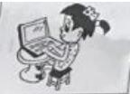
B. 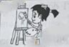
C. 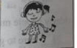
二、听对话或独白，根据对话或独白的内容，从下面各题所给的A、B、C 三个选项中选择最佳选项。
每段对话或独白你将听两遍。（共15 分，每小题1.5 分）
请听一段对话，完成第6 至第7 小题。
6.What does the woman want to drink?
A.Tea. B.Milk. C.Juice.
7.How much does the woman pay?
A.$7. B.$8. C.$9.
请听一段对话，完成第8 至第9 小题。
8.Where are the speakers going to have a picnic?
A.In the park. B.On the hill. C.At the seaside.
9.Who will join the speakers for the picnic?
A.The boy’s dad. B.The boy’s grandpa. C.The boy’s grandma.
请听一段对话，完成第10 至第11 小题。
10.How did the boy go to the wild animal park?
A.By train. B.By car. C.By bus.
11.What did the boy do in the wild animal park?
A.He drew a picture. B.He fed an elephant. C.He saw a bird show.
请听一段对话，完成第12至第13小题。
12.What are the speakers mainly talking about?
A.Different reading skills.
B.Some benefits of reading.
C.The man’s reading habits.
13.What does the man think of reading?
A.He believes it is enjoyable.
B.He finds it a little difficult.
C.He thinks it takes too much time.
请听一段独白，完成第14 至第15 小题。
14.What can we know about the speaker?
A.She lives near her school.
B.She likes traveling abroad.
C.She wants to improve her English.
15.Why does the speaker send this message?
A.To describe her trip in London.
B.To tell the way to her house.
C.To introduce her hometown.
三、听对话，记录关键信息。本段对话你将听两遍。（共10 分，每小题2 分）请根据所听到的对话内容和提示词语，将所缺的关键信息填写在答题卡的相应位置上。
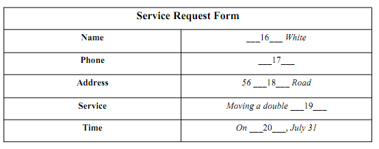
知识运用（共25 分）
四、单项选择（共10分，每小题1分）
从下面各题所给的A、B、C、D 四个选项中，选择可以填入空白处的最佳选项。
1.My father is a worker. is very kind.
A. HeB. SheC. HisD. It
【答案】A
【解析】
句意：我父亲是工人。他非常善良。考查人称代词。A. He他，人称代词主格；B. She她，人称代词主格；C. His他的，形容词性的和名词性的物主代词；D. It它，人称代词主格和宾格。 “我的父亲”应用he指代，结合句意和语境可知选A。
2.More and more young people go skating winter.
A. atB. inC. onD. to
【答案】B
【解析】
句意：越来越多的年轻人在冬天去滑冰。考查介词辨析。A. at在；B. in在…里；C. on在…上；D. to向，到。在哪个季节用介词in；结合句意和语境可知选B。
点睛：on，at，in这三个常用介词都可以表示时间，at：1.表示在某一具体时刻，即几点几分。如：at six o’clock ；2.表示在某一短暂的时间。如：at noon； at this moment；in：1. 表示在较长的时间里（如周／月份／季节／年份／世纪等）。如：in a week；2. 表示在上午、下午或晚上。如：in the morning／afternoon／evening；on：表示在具体某一天（如日期、生日、节日或星期几）及具体某一天的上午、下午和晚上。如：on May 4th； on the morning of July 2； on Sunday afternoon； on a cold winter evening等。
3.--- did you stop playing?
--- Because I was tired.
A. HowB. WhyC. WhenD. Where
【答案】B
【解析】
【详解】句意：---你为什么不玩了？------因为我累了。
考查特殊疑问词。A. How怎样，如何；B. Why为什么；C. When什么时候；D. Where在哪里。根据回答Because I was tired.（因为我累了。）可知询问的是原因，询问原因用why问（用why问，要用because回答），结合句意和语境可知选B。
4.The hotel is very old. It’s one of buildings in the city.
A. oldB. olderC. oldestD. the oldest
【答案】D
【解析】
句意：这家旅馆很旧了。它是这个城市最古老的建筑物之一。One of …之一，后面用名词的复数，修饰名词的形容词一般用最高级，结合句意和语境可知选D。
5.--- I hand in the report today?
--- No, you needn’t.
A. CanB. MustC. ShallD. Could
【答案】B
【解析】
句意：---我今天必须交报告吗？----不，你不必。考查情态动词。A. Can能；B. Must必须； C. Shall将，一般用于第一人称；D. Could能，可以。Must开头的一般疑问句（Must I/she/he….？），它的肯定回答是Yes， you/she/he…must.否定回答是No, you/she/he...needn’t. must开头的一般疑问句不用No,…mustn’t回答，mustn’t意思是禁止做某事。结合句意和语境可知选B。
6.--- How do you usually go to school?
--- I to school on foot.
A. goB. wentC. was goingD. will go
【答案】A
【解析】
【详解】句意：----你通常怎样去上学？------我步行去上学。
考查动词时态。根据问句中usually的频度副词，可知用一般现在时，结合句意可知选A。
7.My mother some washing when the telephone rang.
A. doesB. didC. is doingD. was doing
【答案】D
【解析】
句意：电话铃响时，我妈妈正在洗衣服。考查动词时态。根据when当…的时候，它引导的时间状语从句，从句一般用一般时态，主句用进行时态。本句从句用一般过去式，从句要用过去进行时态。结合句意和语境可知选D。
8.Lily is my classmate. We each other since she came to our school.
A. knowB. knewC. have knownD. will know
【答案】C
【解析】
【详解】句意：莉莉是我的同班同学。自从她来到我们学校，我们就认识了。考查动词时态。Since自从…以来，后跟过去的时间点，或一般过去式的从句，主句用现在完成时。结合句意和语境可知选C。
9.The mobile phone________in 1973.
A. inventsB. is invented
C. inventedD. was invented
【答案】D
【解析】
句意：移动电话在1973年发明的。考查被动语态。根据主语和语境及句意可知用被动语态，被动语态的构成：主语（动作的承受着）+be 动词的过去分词+sth.+by+动作的执行者；根据时间（1973年）可知用过去式，故be动词用was；所以选D。
10.--- Judy, could you tell me_______the schoolbag?
--- Oh, yes. I bought it in a store on the Internet.
A. where did you buyB. where will you buy
C. where you boughtD. where you will buy
【答案】C
【解析】
【详解】句意：---朱蒂，你能告诉我你在哪里买 书包吗？------哦，是的。我在网上的一家商店买的。
书包吗？------哦，是的。我在网上的一家商店买的。
考查宾语从句。宾语从句要用陈述语序，根据回答I bought it in a store on the Internet.的时态是过去式结合语境可知从句时态要用过去式，书包已经买完了。A和B是疑问句语序，排除，D是将来时排除，结合句意和语境可知选C。
五、完形填空（共15 分，每小题1.5 分）
阅读下面的短文，掌握其大意，然后从短文后各题所给的A、B、C、D 四个选项中，选择最佳选项。
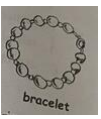
A Meaningful Gift
Emily was an eighth grader. To pass her Civics course（公民课程）, she had to do some volunteer
service in a nursing home for a week.
One Monday, Emily went to the nursing home after school. When she arrived, she was told she would
___11___ an hour every weekday with an elderly lady, Mrs. Blair. She was then led into a room, where an old
lady in a flowery dress was sitting on a sofa.
Emily ___12___awkwardly（别扭地）in front of the lady. She cleared her throat and said, “Good afternoon.
I’m Emily.”
“Good afternoon, Emily. Take a seat, please.” Mrs. Blair replied.
Then, ___13___filled the space between them. Emily wondered what to say.
“Tell me about yourself, Emily,” Mrs. Blair said suddenly.
“Well,” Emily started, “I don’t have any grandparents, so I can’t relate to elderly people much. I love the performing arts. I’m here mainly because I have to___14___ here to get a good grade for my Civics class.”
Mrs. Blair didn’t seem to___15___. “Many people, especially teens, don’t seem to care about old people
like me. Now you are here, and I’m going to change that about you. Ask me anything.”
Emily thought for a moment, and finally decided, “What was your job?”
“I was a Broadway star in the 1950s.” Mrs. Blair answered.
“Cool! Can you tell me about it?” Emily asked, amazed.
Mrs. Blair smiled. “Back then, only the lead actress had the honor to wear a___16___ bracelet. I was
the lead in almost all of the plays, so I always wore the bracelet. Till this day, I still have it.”
Emily smiled along with Mts. Blair and listened to the other stories, attentively. She had become so
interested in Mrs. Blair’s ___17___ that she decided to come earlier the next day.
Tuesday, Wednesday, and Thursday passed by quickly. Then came Friday. As she was leaving, Emily
was really___18___to say goodbye.
“Don’t be sad. You can still visit me,” Mrs. Blair comforted her. She then handed a small box to Emily,“It’s my gift to you.”
Emily___19___opened the box and was surprised to see what was inside. “It’s the bracelet that you
wore. Thank you!” Emily said, with tears in her eyes. “I’m sure to visit you whenever I’m free.”
On the way home, Emily thought of her own love for the performing arts. She touched the bracelet and
made a ____20____that she would keep her word to Mrs. Blair.
11. A. wasteB. spendC. planD. exercise
12. A. askedB. satC. stoodD. danced
13. A. warmthB. sadnessC. happinessD. silence
14. A. studyB. liveC. volunteerD. play
15. A. mindB. fearC. insistD. regret
16. A. strangeB. specialC. commonD. private
17. A. dreamsB. hobbiesC. storiesD. jokes
18. A. upsetB. confusedC. surprisedD. nervous
19. A. proudlyB. secretlyC. worriedlyD. carefully
20. A. promiseB. changeC. judgmentD. choice
【答案】11. B 12. C 13. D 14. C 15. A 16. B 17. C 18. A 19. D 20. A
【解析】
【分析】
本文讲述了一个叫艾米丽的女孩，她热爱表演艺术。在她八年级时，她在养老院志愿服务一周。她结识了20世纪50年代的百老汇明星布莱尔太太。布莱尔太太给艾米丽讲述她的故事。她对布莱尔太太的故事很感兴趣。很快一个星期过去了。临走时，布莱尔太太送给艾米丽她在百老汇当女主角时获得的手镯，并要求艾米丽有空就去看她。艾米丽答应了布莱尔太太的要求。她决定一定会遵守对布莱尔太太诺言。
【11题详解】
句意：当她到达时，她被告知她每一天都会和一位老太太布莱尔太太一起度过一个小时。
考查词义辨析。A. waste浪费；B. spend花费，度过；C. plan计划；D. exercise练习，锻炼。结合句意和语境可知选B。
【12题详解】
句意：艾米丽别扭地站在这个女士面前。
考查词义辨析。A. asked询问，要求，邀请；B. sat 坐；C. stood站立；D. danced跳舞。根据下文She cleared her throat and said, “Good afternoon.
I’m Emily.”“Good afternoon, Emily. Take a seat, please.” Mrs. Blair replied.可知布莱尔夫人让艾米丽坐下，可知艾米丽是站着的，结合句意、语境和选项可知选C。
【13题详解】
句意：然后，沉默填补了他们之间的空间。
考查名词辨析。A. warmth温暖；B. sadness伤心，难过；C. happiness幸福，开心，高兴；D. silence沉默，寂静。根据下文Emily wondered what to say.（艾米丽琢磨说些什么。）结合句意、语境和选项可知选D。
【14题详解】
句意：我在这里主要是因为我必须自愿在这里为了在公民课上取得好成绩。
考查动词辨析。A. study学习，研究；B. live居住；C. volunteer志愿（做），自愿（做），义务（做）；D. play玩，打。根据第一段第二句To pass her Civics course（公民课程）, she had to do some volunteer
service in a nursing home for a week.结合句意、语境和选项可知选C。
【15题详解】
句意：布莱尔太太似乎并不介意。
考查词义辨析。A. mind介意，在乎；B. fear害怕；C. insist坚持；D. regret后悔，遗憾。根据上文爱艾米丽说I don’t have any grandparents, so I can’t relate to elderly people much. I love the performing arts. I’m here mainly because I have to___4___ here to get a good grade for my Civics class.可知艾米丽说的不好听，下文说Many people, especially teens, don’t seem to care about old people like me. Now you are here, and I’m going to change that about you. Ask me anything.可知布莱尔没有生气，并不介意艾米丽说的，故选A。
【16题详解】
句意：那时，只有女主角有幸佩戴了一只特别的手镯。
考查形容词辨析。A. strange奇怪的，陌生的；B. special特别的；C. common普通的，共同的；D. private私人的。根据句中only the lead actress（只有女主角）结合句意和语境可知是特别的手镯，选B。
【17题详解】
句意：她对布莱尔太太的故事很感兴趣，所以她决定第二天早点来。
考查名词辨析。A. dreams； B. hobbies爱好；C. stories故事；D. jokes玩笑。根据上文Emily smiled along with Mts. Blair and listened to the other stories, attentively.（艾米丽随着艾米丽夫人一起笑，聚精会神地听着其他的故事。）结合语境可知她对布莱尔太太的故事很感兴趣，选C。
【18题详解】
句意：当她离开时，艾米丽真地很伤心地道别。
考查形容词辨析。A. upset沮丧的，心烦的；B. confused糊涂的；混乱的；困惑的；C. surprised感到惊讶的，出人意料的；D. nervous紧张的；神经质；紧张不安的。根据下文“Don’t be sad. You can still visit me,” Mrs. Blair comforted her. （“不要难过。“你还是可以来看我的，”布莱尔太太安慰她说。）结合语境、句意和选项可知选A。
【19题详解】
句意：艾米丽小心地打开盒子，看到里面装的东西她感到很惊讶。
考查副词辨析。A. proudly骄傲地；B. secretly秘密地；C. worriedly担心地；焦虑地；D. carefully仔细地；小心地。结合语境、句意和选项可知选D。
【20题详解】
句意：她摸了摸手镯，做出了一个她会对布莱尔太太遵守诺言的承诺。
考查名词辨析。A. promise许诺；B. change变化，改变；C. judgment判断；D. choice选择。根据上文Emily said, with tears in her eyes. “I’m sure to visit you whenever I’m free.”（艾米丽含着眼泪说。“我一有空就去看你。”）结合语境、句意和选项可知选A。
【点睛】完型填空题是不仅考查学生对词汇、词组、语法、句型和常识逻辑等语言基础知识的掌握情况和正确使用语法知识的能力，而且也考查学生的理解能力、推理能力、以及情景语感等方面综合理解和运用语言的能力。解完型填空题需要学生具备视读、跳读、查读、猜词等各种快速阅读技巧。解完型填空题时，单独看一句话是找不到正确答案的，需要阅读下句或者若干句才能明白。完型填空以文入手，结合文章的内容考查学生的基础知识，主要是词语搭配、近义词辨析、辨析句子结构、掌握语法规则的能力。例如，第一题，考查词义辨析。选项意思是：A. waste浪费；B. spend花费，度过；C. plan计划；D. exercise练习，锻炼。通过语境和英文提示猜测句意是：当她到达时，她被告知她每一天都会和一位老太太布莱尔太太一起度过一个小时。结合句意和语境可知选B。
阅读理解（共50 分）
六、阅读下列短文，根据短文内容，从短文后各题所给的A、B、C、D四个选项中，选择最佳选项。
（共30 分，每小题2 分）
A
Summer Programs at Museums
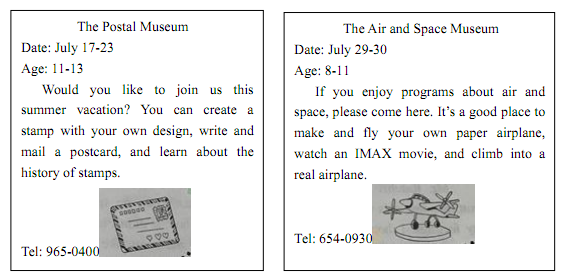
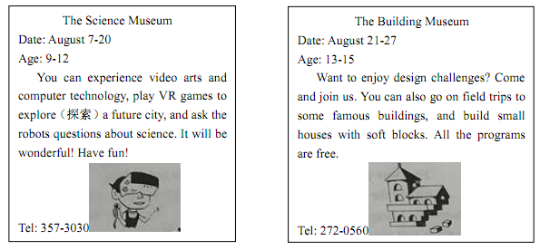
21. You can join in the programs at the Postal Museum any day _______.
A. from July 17 to 23B. from July 29-30
C. from August 7-20D. from August 21 to 27
22. If you are interested in the program about video arts, you can phone _______.
A. 965-0400B. 654-0930C. 357-3030D. 272-0560
23 A 15-year-old student can take part in the programs at _______.
A 15-year-old student can take part in the programs at _______.
A. the Building MuseumB. the Postal Museum
C. the Air and Space MuseumD. the Science Museum
24. In the Air and Space Museum, you can _______.
A. create a stampB. build a house
C. make a paper airplaneD. explore a future city
【答案】21. A 22. C 23. A 24. C
【解析】
本文是四个博物馆暑期活动。介绍了活动时间，活动项目，参见活动的年龄和电话。
【21题详解】
题意：你可以______________的任何时候参加邮政博物馆的活动。考查细节理解题。A. from July 17 to 23从7月17日到23日；B. from July 29-30从7月29到30；C. from August 7-20从8月7日到20日；D. from August 21 to 27从8月21日到27日。根据广告The Postal Museum Date ：July 17-23可知邮政博物馆的活动日期是从7月17日到23日；选A。
【22题详解】
题意：如果你有关于影视艺术项目感兴趣，你可以打电话_______________。考查细节理解题。根据广告The Science Museum中第第三行You can experience video arts…（你可以体验视频艺术…）和最后电话Tel：357-3030结合题意可知选C。
【23题详解】
题意：一个15岁的学生可以在_______参加节目。考查细节理解题。根据广告The Building Museum第三行Age：13-15可知参加建筑博物馆活动的年龄是从13岁到15岁。结合题意和选项可知选A。
【24题详解】
题意：在航空航天博物馆，你可以___________________。考查细节理解题。A. create a stamp设计一个邮票 ；B. build a house建一座房子；C. make a paper airplane做纸飞机；D. explore a future city探索未来城市。根据广告The Air and Space Museum中第四行It is a good place to make and fly your own paper airplane.（这是一个制作和驾驶你自己的纸飞机的好地方。）可知在在航空航天博物馆可以做纸飞机，选C。
B
The Sixth Time I Went to the Principal’s Office
When I was in the seventh grade, I had problems behaving. My heart was in the right place, but I
couldn’t always follow the rules. I played many tricks on my schoolmates. Once, I even pulled a girl’s hair
on the school bus to get her attention. As a result, I was repeatedly sent to the office of the principal（校长）.
Although I hated going there, I did not hate the principal, Mr. Ratcliff.
Mr. Ratcliff was a kind, elderly man. When he spanked（ 打屁股） me for putting some ants into a
classmate’s pencil box, it didn’t hurt at all, but it did hurt my feelings. I thought so much of him and
moments like that seemed to prove I was hopelessly bad.
When I got called to Mr. Ratcliff’s office for the sixth time, I had no idea what I had done. I felt
disappointed as I walked down there. I went into his office, sat down, and looked at the floor. Then he said
the last thing I expected to hear:” Kevin, I’ve heard you’ve been behaving really well lately. I want you to
know how proud I am of you, and I just called you down to my office to give you a peppermint.”
“Really?” I was surprised.
“Yes. Now you can take that peppermint and go back to class.”
I carried the peppermint with me as if it was a gold coin. When I got into my classroom, I bragged （ 吹嘘） to my classmates about my turnaround,excitedly. I wasn’t so bad after all.
Mr. Ratcliff was really kind. He made me realize that I was just a kid who had problems with behavior.He bought some peppermints and took the time to notice me when I got something-anything-right. Mr.Ratcliff gave me some hope by giving me some love. I will just remember him for the rest of my life.
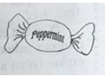
25. In his seventh grade, the writer __________.
A. hated the principalB. had problems behaving
C. always followed the rulesD. often helped his classmates
26. How did the writer feel when he went to the principal’s office for the sixth time?
A. Lonely.B. Excited.C. Confident.D. Disappointed.
27. The sixth time the writer went to the principal’s office, he got __________.
A. a peppermintB. a model busC. a pencil boxD. a coin
28. The writer will always remember Mr. Ratcliff, because the principal __________.
A. talked with him in the officeB. played games with him
C. expected him to be a teacherD. gave him some hope and love
【答案】25. B 26. D 27. A 28. D
【解析】
本文作者讲述了自己七年级发生的一段往事。他在七年级时，行为上遇到了一些问题，作者的心思不能放在正确的地方，不能总是遵守规则。作者经常对同学们开玩笑。经常被叫到校长办公室，打屁股。当他第六次被叫到校长办公室时，作者不知道什么原因。校长因为他的进步给了他一颗薄荷糖。作者备受鼓舞。校长让作者意识到他只是一个行为上有问题的孩子。后来，校长，拉特克利夫先生花时间去注意作者，当作者有进步时，就买了一些薄荷糖给作者。拉特克利夫先生给了作者希望和爱。作者将会永远记住他。
25题详解】
题意：在他第七年级时，这位作者_________________。考查细节理解题。A. hated the principal讨厌的校长；B. had problems behaving在行为有问题；C. always followed the rules总是遵守规则；D. often helped his classmates经常帮助他的同学。根据第一段第一句When I was in the seventh grade, I had problems behaving.（当我在第七年级时，我的行为有问题。）可知选A。
【26题详解】
题意：作者第六次去校长办公室时感觉如何？考查细节理解题。A. Lonely. 寂寞的; 孤独的，孤单的； B. Excited. 兴奋的，激动的；C. Confident. 有信心的，沉着的；D. Disappointed失望的，沮丧的；受挫折；.根据第三段第1和2句When I got called to Mr. Ratcliff’s office for the sixth time, I had no idea what I had done. I felt disappointed as I walked down there.（当我叫到Ratcliff先生的办公室，这是第六次，我不知道我做了什么。当我走到那里时，我感到很沮丧。）可知选D。
【27题详解】
题意：作家第六次去校长办公室时，他得到了_________________。考查细节理解题。A. a peppermint一块薄荷糖；B. a model bus一个公共汽车模型；C. a pencil box一个铅笔盒；D. a coin一枚硬币。根据第三段最后一句Now you can take that peppermint and go back to class.（现在你可以拿着薄荷糖回去上课了。）和第四段第一句I carried the peppermint with me as if it was a gold coin.（我随身带着薄荷糖，好像是一枚金币。）可知作家第六次去校长办公室时，他得到了一块薄荷糖。结合句意可知选A。
【28题详解】
题意：作者将永远记住拉特克利夫先生，因为校长________________________。考查细节理解题。A. talked with him in the office在办公室和他谈话；B. played games with him和他玩游戏；C. expected him to be a teacher期望他成为一名教师；D. gave him some hope and love给了他希望和爱。根据本文最后两句Mr.Ratcliff gave me some hope by giving me some love. I will just remember him for the rest of my life.（拉特克利夫先生给了我一些希望，给我一些爱。我会在我以后的生活中记住他。）结合语境和题意可知选D。
点睛：阅读理解最能体现学生的英语能力的题型，分值较高。初中阅读理解一般考查学生的细节理解能力，主旨理解能力和推理判断能力。做阅读理解题，首先要准确理解题意，然后根据题意根据短文内容做出正确的答案。（1）考查细节理解能力，此类型题较简单，准确理解题意后，直接到文中找出答案。例如，第1题选项意思是：A. hated the principal讨厌的校长；B. had problems behaving在行为有问题；C. always followed the rules总是遵守规则；D. often helped his classmates经常帮助他的同学。根据第一段第一句When I was in the seventh grade, I had problems behaving.（当我在第七年级时，我的行为有问题。）可知选A。（2）考查猜词能力。做这种题型时，要根据上下文意思准确猜出词意。3）考查推理判断能力，此类题型较难，准确理解题意后，在文中找出相关的内容做出合理的推断。
C
Buying Is Doing?
How important is shopping to you? How much time do you spend buying things? And how much time do you spend organizing these things in your home? In the future, how much time will you spend in movie theaters, at amusement parks, at shopping malls, or at convenience stores? When you add it all up, you will probably see you spend a lot of your life consuming（消费）things. Consuming products is not necessarily bad. However, if we spend too much time doing it, we should look at it carefully.
Imagine that you have a week off from school. You don’t have to go to class. However, in this week, you cannot spend any money — no shopping, no movies, no eating out. How would you spend your time?
What things would bring you happiness? Perhaps you would take a walk with your best friend. Perhaps you would help a child read. Or you might spend time with your family.
When we look back, it is likely that non-consuming experiences like these will be our most important memories. Why? Non-consuming activities are active, not passive. They don’t come in a package. You make the experience yourself. For example, each person who reads to a child will have a different experience. The experience changes with the reader, the child, and the book. Similarly, when you have a conversation with a friend, you are actively creating an experience. The conversation that you have with your friend cannot be experienced or recreated by anyone else. However, if you watch a movie with a friend, you will each have a package experience. It requires no action and little interaction between the two of you.
The environment we live in encourages us to have packaged experiences. We feel that we must consume because we believe that buying is doing. However, we can start a personal revolution（变革） against consumerism. How? By consuming less, we can ask ourselves what experiences bring us the greatest satisfaction. Then we can organize our lives so that we have more of those kinds of experiences.
29. If consuming products takes too much time, we should ____________.
A. spend less moneyB. think about it carefully
C. organize our thingsD. go to convenience stores
30. According to the passage, the writer believes that _____________.
A. we can say no to consumerism by consuming less
B. buying things can bring us the greatest satisfaction
C. the environment seldom influences our shopping choices
D. consuming experiences will be our most important memories
31. What is the writer’s main purpose in writing this passage?
A. To introduce some ways of enjoying our spare time.
B. To encourage people to have more active experiences.
C. To explain reasons behind people’s shopping behavior.
D. To share his personal experience in consuming products.
【答案】29. B 30. A 31. B
【解析】
短文讲了人们把生命中的大量时间用于购物消费，作者认为不可取，他希望人们能够降低消费，换种方式生活，主动的积极的生活状态会更有意义。
【29题详解】
问题：如果消费产品花了太多时间，我们应该______________。考查细节理解题。A. spend less money花更少的钱；B. think about it carefully仔细考虑一下；C. organize our things规划我们的事情；D. go to convenience stores去便利店。根据第一段最后一句However, if we spend too much time doing it, we should look at it carefully.（但是，如果我们花了太多的时间去做，我们应该仔细看看。）可知如果消费产品占用了太多的时间，我们应该认真考虑它，故选B。
【30题详解】
问题：根据文章，作者认为_______________________。考查细节理解题。A. we can say no to consumerism by consuming less。我们可以通过减少消费来拒绝消费主义；B. buying things can bring us the greatest satisfaction买东西能带给我们最大的满足；C. the environment seldom influences our shopping choices环境很少影响我们的购物选择；D. consuming experiences will be our most important memories消费经历将是我们最重要的回忆。根据最后一段第三句However, we can start a personal revolution against consumerism. How? By consuming less. （然而，我们可以开始一场反对消费主义的个人革命。如何？减少消费。）结合题意可知选A。
【31题详解】
问题：作者写这篇文章的主要目的是什么？考查主旨理解题。A. To introduce some ways of enjoying our spare time. 介绍一些享受业余时间的方法；B. To encourage people to have more active experiences. 鼓励人们有更积极的经历；C. To explain reasons behind people’s shopping behavior. 解释人们购物行为背后的原因；D. To share his personal experience in consuming products. 分享他在消费产品方面的个人经历。根据整篇文章内容及其最后一段最后一句Then we can organize our lives so that we have more of those kinds of experiences.然后我们可以组织我们的生活，使我们有更多的体验。可知为了鼓励人们有更积极的体验，故选B。
根据文中第二段第7和8句When we look back, it is likely that non-consuming experiences like these will be our most important memories. Why? Non-consuming activities are active, not passive.（当我们回顾过去的时候，像这样的非消费体验很可能是我们最重要的记忆。为什么？非消耗性活动是主动的，而不是被动的。）可知作者写这篇文章的主要目的是鼓励人们有更积极的经历；选B。
D
Say you’re sitting around with some friends playing video games and someone mentions a game that happens to be one of your favorites. “Oh, that game’s easy. So not worth the time,” one of your friends says.The others agree. Although you enjoy the game quite a lot, not wanting to argue with them, you go along with the crowd.
You have just experienced what is commonly referred to as peer pressure（同伴压力）, also called peer influence. You will adopt a certain type of behavior, dress, or attitude in order to be accepted as part of a group of your “peers”. As a teen, you are likely to have experienced the effect of peer pressure in a number of different areas.
We are all influenced by our peers at any age. For teens, as school and other activities take you away from home, you may spend more time with your friends than with your family. As you become more independent, your peers naturally play a greater role in your life.
According to Dr. Casey from Cornell University, teens are very quick and accurate in making decisions on their own and in situations where they have time to think. However, when they make decisions in the heat of the moment or in social situations, their decisions are often influenced by factors like peers. In a recent study, teen volunteers played a video driving game, either alone or with friends watching. The researchers discovered that the number of risks teens took more than doubled when their friends were watching, compared with when they played alone. This shows that teens may find it more difficult to control risky behavior when their friends are around, or in situations where they are extremely angry. Just as people can influence us to make unwise choices, they can also influence us to make good ones. A teen might join in a volunteer project because his or her friends are doing it, or get good grades because his or her friends think getting good grades is important. In fact, friends often encourage each other to study, or try out for sports.
While we are always influenced by those around us, the decision to act or not is up to us. So when it comes to decision making, the choice is up to you.
32. According to the passage, Dr. Casey probably agrees that teens ____________.
A. like to play driving games with their friends
B. prefer situations where they have time to think
C. may take more risks when their friends are around
D. are slow in making decisions when they are on their own
33. The words “in the heat of the moment” in Paragraph 4 probably mean “_________”.
A. when teens avoid possible risksB. when teens trust their judgment
C. when teens lose control over their angerD. when teens give consideration to situations
34. What can we learn from the passage?
A. Teens are eager to be different from their peers.
B. Peer pressure has effects on both teens and adults.
C. Peer pressure does more harm than good to teens.
D. Tees think it challenging to get good grades at school.
35. Which of the following would be the best title for the passage?
A. Peer Pressure: Is It Necessary to Deal with It?
B. Peer Pressure: Is It Possible to Get Away from It?
C. Peer Pressure: Its Benefits to Teens and Friend Making
D. Peer Pressure: Its Influence on Teens and Decision Making
【答案】32. C 33. C 34. B 35. D
【解析】
文章谈论的是同伴压力对青少年的影响，尤其是对青少年做决定的影响。文章前半部分讲的是同伴压力对青少年不好的影响，倒数第二段是同伴压力对青少年好的影响，最后一段作为总结，告诉我们，如何做决定取决于我们自身。
【32题详解】
细节理解题。根据文章第四段第四句“The researchers discovered that the number of risks teens took more than doubled when their friends were watching”可知认为身边有朋友的时候会有更多的风险，选项C符合。
【33题详解】
词句猜测题。结合文章第四段第一句“According to Dr．Casey from Cornell University，teens are very quick and accurate in making decisions on their own and in situations where they have time to think”可知，在依靠自己或者有时间可以思考的情况下，青少年会又快又准确地做出决定。结合后面的however一词，可知后面的与之相反的情况，即受到外界干扰的情况，选项中的C符合此意。
【34题详解】
细节理解题。根据文章第三段第一句话"We are all influenced by our peers at any age．"可知，在任何年龄段我们会受到同伴压力的影响。选项B同伴压力对青少年和成年人都有影响，说法一致，故答案选B。
【35题详解】
标题归纳题。A. Peer Pressure: Is It Necessary to Deal with It? 同伴的压力：有必要去处理吗？B. Peer Pressure: Is It Possible to Get Away from It? 同伴的压力：有可能摆脱它吗？C. Peer Pressure: Its Benefits to Teens and Friend Making同伴的压力：对青少年和朋友的好处；D. Peer Pressure: Its Influence on Teens and Decision Making同伴的压力：它对青少年和决策的影响。本文主要讲述了同伴压力对任何年龄段都有影响，特别讲述了它对青少年的决定影响和行为的影响。结合题意和本文主要内容可知选D。
七、阅读短文，根据短文内容，从短文后的五个选项中选出能填入空白处的最佳选项。每个选项只能用一次。（共10 分，每小题2 分）
From the Other Side
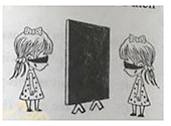
Lara and Tara are twins.___36___, but they are very different in everything else. For example, hot food is Lara’s favorite, and Tara has a sweet choice.
However, this isn’t the problem with the twin girls. They always argued that the opposite one was wrong.___37___, while Tara insisted that mornings were fresh and it was difficult to stay up till midnight. ___38___. To put an end to their fights, their parents decided to create a small drama. They wanted the girls to understand that they were both correct from their own point of view. Their parents covered the girls’ eyes with black ribbons, and brought them to the dining room.___39___Lara was asked to stand on one side of the board and Tara on the other. They couldn’t see the other side of it. When the ribbons were taken away, they were surprised to see a huge board between them.
Now, their father asked Lara, “What’s the color of the board?” She replied, “It’s black!” ___40___She replied, “It’s white!” The two girls began to argue again. While Lara was confident it was black, Tara was sure it was white. Then, they were asked to exchange（交换）their places. They couldn’t believe their eyes. Tara, who insisted it was a white board, saw a black one. Similarly, Lara, who argued the board was black, was shocked to see a white one. They understood that each of them was right in her own view. Most of us are like Lara and Tara. We are right most times, but insist that others are wrong!
A. They look like each other
B. For years, their arguments continued
C. Their mother asked Tara the same question
D. In the room, a big board was placed in the middle
E. Lara thought it was terrible to get up early in the morning
【答案】36. A 37. E 38. B 39. D 40. C
【解析】
本文讲述了双胞胎劳拉和塔拉经常坚持自己正确，认为对方错了。例如，劳拉认为早上早起很可怕。而塔拉坚持说早晨很新鲜，很难熬到午夜。多年来，他们的争论仍在继续。为了结束争吵，他们的父母决定上演一出小剧。他们被带到一个黑屋子里。在房间里，中间放了一块大木板。劳拉被要求站在木板的一边，塔拉站在另一边。他们的父亲问劳拉：“这块木板是什么颜色的？”她回答说：“是黑色的。”他们的母亲问塔拉同样的问题。塔拉她回答说：“是白色的！”后来交换位置，他们发现都对。他们明白他们每个人的观点都是正确的。我们大多数人都像劳拉和塔拉。我们大多数时候是对的，但坚持别人是错的！
【36题详解】
句意：他们长得很像。考查细节理解题。根据上文Lara and Tara are twins.（劳拉和塔拉是双胞胎。）和下文but they are very different in everything else.（但他们在其他方面都大不相同。）结合句意和语境可知选A。
【37题详解】
句意：劳拉认为早上早起很可怕。考查细节理解题。根据上文They always argued that the opposite one was wrong.（他们总是争辩相反的人是错误的。）和下文while Tara insisted that mornings were fresh and it was difficult to stay up till midnight.（塔拉坚持说早晨很新鲜，很难熬到午夜。） 结合句意和语境可知选E。
【38题详解】
句意：多年来，他们的争论仍在继续。考查细节理解题。根据下文To put an end to their fights, their parents decided to create a small drama.（为了结束争吵，他们的父母决定上演一出小剧。）结合句意和语境可知选B。
【39题详解】
句意：在房间里，中间放了一块大木板。考查细节理解题。根据下文_Lara was asked to stand on one side of the board and Tara on the other.（劳拉被要求站在木板的一边，塔拉站在另一边。）结合句意和语境可知选D。
【40题详解】
句意：他们的母亲问塔拉同样的问题。考查细节理解题。根据上文Now, their father asked Lara, “What’s the color of the board?” She replied, “It’s black!”（他们的父亲问劳拉：“这块木板是什么颜色的？”她回答说：“是黑色的。”）和下文She replied, “It’s white!”（她回答说：“是白色的！”）结合句意和语境可知选C。
八、阅读短文，根据短文内容回答问题。（共10 分，每小题2 分）
What’s in a Name?
Many American names come from England. But where did most English names come from?
Centuries ago, most people in England had only one name-- their first name. In the 11th century, five or six of the 50 people in a village might be named William, and it was easy to get confused. But in the Middle Ages, people found a way to describe each person exactly. If there were four Williams in one village, one might be referred to as William the son of John. A second might be called William from the hill. A third,William the blacksmith（铁匠）. And a fourth, William the brown haired. In conversation, people might refer to the four Williams as William John’s son, William hill, William smith, and William brown.
It was 300 or 400 years before the extra （ 附加的） names gradually developed into last names, or
surnames. They were passed on from generation to generation. By the 1300s, Robert, the son of William
smith, had the name Robert smith, even if he was not a blacksmith like his father. As the last name became
widely accepted, the first letter was capitalized, as in Robert Smith. By the 15th century, most people of the
upper and middle classes had surnames
Many surnames were based on father-son relations. The “son of” part was added to the father’s first
name, like Johnson, meaning John’s son. Sometimes it was shortened to just “s”, as in Jones or Evans.
Surnames like Hill described the place where a person lived. They are the most common type of surname. A third kind of surname was based on a person’s job. Forester was someone who looked after the forest. In the Middle Ages, occupation names such as Baker, Carpenter, and Miller became common. The fourth kind of surname was nickname（绰号）. A man whose surname was Bear might be as fierce as a bear.
Have you ever wondered why some surnames are so common? The most common surname in the
English language is Smith. Being able to make metals（金属）into tools was an important skill in the Middle
Ages, and many people were trained as blacksmiths. The most common American surnames are Smith,
Johnson, William and Brown.
41. Where do many American names come from?
42. When did people find a way to describe each person exactly?
43. How long did it take for extra names to develop into last names?
44. What is the fourth paragraph mainly about?
45. Why were many people trained blacksmith in the Middle Ages?
【答案】41. England
42. In the middle ages.
43. 300 or 400 years.
44. Many surnames were based on father—son relations.
45. Because being able to make metals into tools was an important skill in the Middle Ages.
【解析】
本文主要讲述英美姓氏的来历。
【41题详解】
问题：许多美国人的名字是从哪里来的？考查细节理解题。根据第一段第1句Many American names come from England.（许多美国人的名字来自英国。）结合题意可知答案是England 。
【42题详解】
问题：人们什么时候才能准确地描述每个人？考查细节理解题。根据第1段第5句But in the Middle Ages, people found a way to describe each person exactly.（但是在中世纪，人们发现了一种精确地描述每个人的方法。）结合题意可知答案是In the middle ages.
【43题详解】
问题：把额外的名字发展成姓氏需要多长时间？考查细节理解题。根据第2段第1句It was 300 or 400 years before the extra （ 附加的） names gradually developed into last names, or
surnames.（过了300、400年，这些附加的名字逐渐发展成姓，或者姓氏。）结合题意和语境可知答案是300 or 400 years.
【44题详解】
问题：第四段主要讲的关于什么的？考查主旨理解题。一般每段第一句就是这一段的中心句，根据第四段第一句Many surnames were based on father-son relations.（许多姓氏是以父子关系为基础的。）可知第四段主要讲许多姓氏是以父子关系为基础的。结合题意和语境可知答案是Many surnames were based on father—son relations.
【45题详解】
问题：为什么中世纪有很多人训练铁匠？考查细节理解题。根据最后一段倒数第二句Being able to make metals（金属）into tools was an important skill in the Middle Ages, and many people were trained as blacksmiths.（能够把金属制作成工具是中世纪的一种重要技能，许多人被训练成铁匠。）结合题意和语境可知答案是Because being able to make metals into tools was an important skill in the Middle Ages.
书面表达（共15分）
九、文段表达（15分）
从下面两个题目中任选一题，根据中文和英文提示，完成一篇不少于50 词的文段写作。文中已给出内容不计入总词数。所给提示词语仅供选用。请不要写出你的校名和姓名。
题目①
46.（2017﹒北京）假如你是李华，正在美国参加一个交换生项目。今天下午你应邀和朋友Jim 一家外出，请用英语给接待家庭的妈妈Mrs. Smith 写一个留言条，告诉她你们要去哪里，去做什么，以及你回家的时间和方式。
提示词语：park, movie theater, go boating, watch a movie
提示问题：Where are you going?
What are you going to do?
When and how will you get home?
Dear Mrs. Smith,
My friend Jim asks me to go out with his family this afternoon.______________________________________
____________________________________________________________________________________________________________________________________________________________________________________________________________________________________________________________________________________________________________________________________________________________________________________________________________________________________________________________________________
Yours,
Li Hua
【答案】范文
Dear Mrs. Smith,
My friend Jim asks me to go out with his family this afternoon. I am writing to tell you that we will meet in the park. Then we will go to the movie theater to watch a movie. Finally, we are going to go boating in the lake. Don’t worry about me. We will be back at 6:00 p.m. Jim’s father will send me home by taxi. I am sure to have a lot of fun. Waiting for my back.
Yours,
Li Hua
【解析】
【详解】试题分析：这是一篇应用文，写一篇留言条。也是一篇材料作文，给出了一些材料，并给出了一些提示单词和提示问题。我们要根据提示材料和问题（Where are you going? What are you going to do? When and how will you get home?）用正确的英语把要点表达出来，用上所给单词，并适当发挥想象。动笔前要认真阅读材料，不要遗漏要点。根据材料内容可知本文主要是用一般将来时来写。首先，回答 “Where are you going?” 要明确写出外出的地点。然后回答“What are you going to do?”具体写出我们到达外出地之后所进行的活动。接着回答“When and how will you get home?”需要写出回家的方式和到家的时间。最后，写希望家里的妈妈不要为我担心。写作中要适当使用连词，注意叙述的顺序，要符合逻辑关系。
【写作亮点】这篇短文语句通顺，表达准确。学习中注意总结，牢记一些固定句式及短语,特别适用了表示先后顺序的词Then，Finally,使表达具有条里性，句式Don’t worry about me. .I am sure to等的使用，更增加了文章的色彩，此文表达具有逻辑性,，有条理。
题目②
47.(2017﹒北京)宽容是一种美德。人与人之间难免会有磕磕绊绊。面对矛盾，多一份包容和谅解，生活就会多一缕阳光。
某英文网站正在开展以＂包容、谅解＂为主题的征文活动。假如你是李华，请用英语写一篇短文投稿，谈谈生活中你原谅他人的一次经历，主要内容包括：你们之间发生了什么，你为什么原谅对方，以及原谅对方之后的感受。
提示词语：hurt, realize, forgive（原谅）, happy
提示问题：What happened between you and him/her?
Why did you decide to forgive him/her?
How did you feel after forgiving him/her?
I still remember what happened between________________________________________________________
________________________________________________________________________________________________________________________________________________________________________________________________________________________________________________________________________________________________________________________________________________________________________________________________________________________________________________________________________________________________________________________________________________________________________
【答案】I still remember what happened between me and Tom. Yesterday, I had a fight with my friend Tom. He took away my pen without my agreement. My father bought it for me last year, and I like it very much. His behavior hurt me. I was very angry. For his sorry, he wrote a card:＂Sorry, please forgive me＂. He felt ashamed for what he did. At last I realized that I was too stingy. I choose to forgive him. He was very happy for my forgiveness. I was very happy, too. Through this matter, we became good friends.
As the Chinese old saying goes＂To err is human＂. In our whole long life, I believe, nobody can make no mistakes. Children may broke bowls, students may cheat or do something against the teacher, and grown-ups may do something wrong on their work or even something against the law. Keeping something unpleasant in mind does no good to us. Letting the unhappy matters go brings happiness and pleasure back to our life.
【解析】
试题分析：本文属于话题类作文，话题是“包容、谅解”。主要关于个人经历的，需要考生写出谅解他人的经历，具体内容围绕以下三个方面：1.你们之间发生了什么事？2.你为什么决定原谅他（她）？3.谈谈你原谅他（她）之后的感受。仔细阅读有关提示，弄清试题提供的所有信息，明确有哪些要点。考生需要从三个方面作答，指出原谅对方的一件事情，原谅的原因以及原谅之后的感受。根据要表达的内容确定句子的时态、语态；语言表达要符合英语习惯。写作时注意准确运用时态，上下文意思连贯，符合逻辑关系。
【亮点说明】：这是一篇比较优秀的作文，本文很好地完成了试题规定的任务。覆盖所有内容要点；语言表达要符合英语习惯，准确运用时态，上下文意思连贯，用词准确、句子通顺、行文连贯。首先指出原谅的对象，“I still remember what happened between me and Tom.”
接着详细描述发生的事情，先指出矛盾点，“Yesterday ,I had a fight with my friend Tom.He took away my pen without my agreement…..” 然后，描述转折点，是他认识了错误，给我道歉For his sorry,he wrote a card:”Sorry ,please forgive me” .He felt ashamed for what he do. 事情发展的最后，我原谅了朋友并拥抱和好，“I choose to forgive him.He was very happy for my forgiveness.I was very happy,too.Through this matter,we became good friends..”最后描述自己的感悟As the Chinese old saying ….. Letting the unhappy matters go brings happiness and pleasure back to our life.